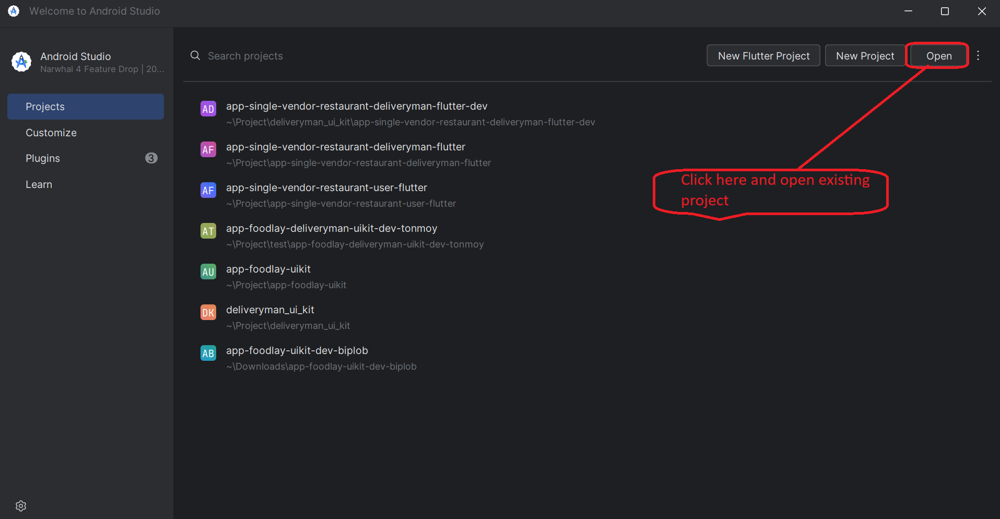
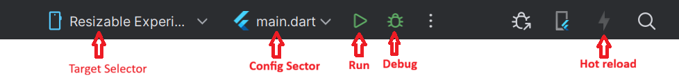

Overview
Foodlay Deliveryman App is a complete, production-ready application for delivery partners built with Flutter for Android and iOS.
- A full delivery app with login, orders, maps, and chat
- GoRouter-based navigation with a dashboard (Home, Orders, Account)
- Localization, theming, DI, and Firebase messaging integrated
Basic Usage
- Sign in and switch to online mode
- Accept incoming delivery requests
- Navigate to pickup, update status, deliver order
- Review completed orders and earnings
Requirements
- Flutter (Channel stable, 3.41.2)
- Dart 3+
- Android Studio
- Xcode 26.2 for IPA file build
- Devices or emulators
Environment Setup
Windows
- Download Android Studio Koala 2024.1.2 (bundled JDK 17).
- Ensure JDK 17 is used for Android builds.
- Run the installer (e.g., android-studio-ide-<version>-windows.exe).
- Follow the installation wizard; choose a custom location if needed.
- Select components (Android Studio, Android Virtual Device, etc.).
- Launch Android Studio and complete initial setup.
- Install SDK components when prompted.
- Optional: create an emulator in AVD Manager.
Install Flutter SDK (Windows)
- Download the latest stable Flutter for Windows.
- Extract to a folder, e.g., C:\flutter.
- Add C:\flutter\bin to PATH:
- Right‑click “This PC” → Properties → Advanced system settings → Environment Variables.
- Edit “Path” under System variables → New → add C:\flutter\bin.
flutter doctor
- In Android Studio: File → Settings → Plugins → Marketplace → install Flutter and Dart, then restart.
Linux
- Download Android Studio Koala 2024.1.2 (bundled JDK 17) for Linux.
- Ensure JDK 17 is used for Android builds.
- Extract the archive, move to a preferred location, run setup:
tar -xvzf android-studio-ide-<version>-linux.tar.gz sudo mv android-studio /YOUR_DIRECTORY cd /YOUR_DIRECTORY/android-studio/bin ./studio.sh
- Install Flutter SDK (Linux): download stable, extract, move to a preferred location, add flutter/bin to PATH.
tar xf flutter_linux_<version>.tar.xz sudo mv flutter /YOUR_DIRECTORY flutter doctor
- In Android Studio: Settings → Plugins → Marketplace → install Flutter and Dart, then restart.
macOS
- Download Android Studio for macOS (Koala 2024.1.2 with JDK 17).
- Ensure JDK 17 is used for Android builds.
- Open the DMG and drag Android Studio to Applications.
- Launch Android Studio; complete setup and install SDK components.
- Install Flutter SDK (macOS): download stable, extract, move to preferred location, add flutter/bin to PATH.
tar xf flutter_macos_<version>.tar.xz flutter doctor
- In Android Studio: Preferences → Plugins → Marketplace → install Flutter and Dart, then restart.
Setup
Run an existing Flutter project on IDE
- Verify Flutter and IDE setup in a terminal:
flutter doctor
- Open the project in Android Studio or VS Code.
- If dependencies are not prompted, fetch them manually:
flutter pub get
- Run the app from IDE or terminal:
flutter run
Change App Logo & Icon
App Logo
- Go to <project>/assets/images/ and replace logo.png with your logo.
- Use the exact file name logo.png.
App Icon
- Generate icons using your preferred app icon generator.
- Android: replace android/app/src/main/res/mipmap-* with the generated icons.
- iOS: replace ios/Runner/Assets.xcassets with the generated Assets.xcassets.
Change App Name
- Update the application name in your constants file:
lib/config/util/app_constants.dart static const String appName = 'YOUR_APP_NAME';
- Android: set the label in AndroidManifest.xml:
android/app/src/main/AndroidManifest.xml android:label="YOUR_APP_NAME"
- iOS: set display name and bundle name in Info.plist:
ios/Runner/Info.plist <key>CFBundleDisplayName</key> <string>YOUR_APP_NAME</string> <key>CFBundleName</key> <string>YOUR_APP_NAME</string>
Change Base URL
- Install and set up your Admin Panel first.
- If admin login is https://your_domain.com/admin/auth/login then base URL is https://your_domain.com
- Open <project>/lib/util/app_constrants.dart and set baseUrl.
- Do not add a trailing slash.
Wrong: static const String baseUrl = 'https://your_domain.com/'; Right: static const String baseUrl = 'https://your_domain.com';
Change App Package
- Find current package in android/app/src/main/AndroidManifest.xml.
- In Android Studio: right‑click project → Replace in Path.
- Enter old package as search, new package as replacement → Replace All.
Setup Firebase for Push Notification
Use one Firebase project for all apps (Customer, Admin/Web, Deliveryman). Add
multiple apps under the same project.
Android
- Add Android app in Firebase with your package name and app name.
- Download google-services.json and place into android/app/ (replace existing file).
- Replace notification icon with a white PNG at android/app/src/main/res/drawable/notification_icon.png.
- Update Firebase options in lib/main.dart (apiKey, appId, messagingSenderId, projectId).
- Generate lib/firebase_options.dart via FlutterFire CLI:
dart pub global activate flutterfire_cli firebase login flutterfire configure
iOS
- Add iOS app in the same Firebase project.
- Download GoogleService-Info.plist and place under ios/.
- Complete APNs/FCM integration steps for iOS.
Admin
- Add a Web app in the project to retrieve firebaseConfig for Admin.
- Follow Admin Firebase configuration.
- Guide: Admin Firebase configuration
After setup, restart your IDE, uninstall any previously installed app, and run
again on a real device (emulators/simulators do not receive push on iOS).
Android Secrets
- Create android/app/src/main/res/values/secrets.xml with required keys.
- Keys: google_maps_api_key, facebook_app_id, facebook_client_token
<resources> <string name="google_maps_api_key">YOUR_KEY</string> <string name="facebook_app_id">YOUR_APP_ID</string> <string name="facebook_client_token">YOUR_TOKEN</string> </resources>
Add Google Map API Key
- Generate your Google Maps API key.
- Enable: Directions API, Distance Matrix API, Geocoding API, Maps SDK for Android, Maps SDK for iOS, Maps JavaScript API, Places API, Geolocation API, Routes API, Places API (New).
- Enable billing on your Google Cloud project.
If your map key was created before March 1, 2025, enable Routes API and Places
API (New).
Android
<meta-data android:name="com.google.android.geo.API_KEY" android:value="YOUR_MAP_API_KEY_HERE"/>
iOS
GMSServices.provideAPIKey("YOUR_MAP_API_KEY_HERE")
Web
<script src="https://maps.googleapis.com/maps/api/js?key=YOUR_MAP_API_KEY_HERE"></script>
Quick Start
Pick a device
- Android: start an emulator from AVD Manager or connect a device with USB debugging enabled.
- iOS: open Simulator from Xcode (or connect a real device with Developer Mode enabled).
Run from IDE
- Open the project in Android Studio or VS Code.
- Select a target device from the device dropdown.
- Click Run ▶ to build and launch in debug mode.
Run from terminal
flutter pub get flutter run
Common checks
- Accept Android SDK licenses if prompted.
flutter doctor --android-licenses
- Verify a device is available.
flutter devices 

Android & iOS Config
Android
- App ID: set applicationId under defaultConfig in android/app/build.gradle.
- App name: set android:label in android/app/src/main/AndroidManifest.xml.
- SDK levels: set minSdkVersion and targetSdkVersion in build.gradle.
- Signing: create a keystore, add key.properties, and reference it in the release signingConfig.
- Release build: flutter build apk or flutter build appbundle.
iOS
- Open ios/Runner.xcworkspace in Xcode.
- Bundle Identifier: set under General; select Team to enable automatic signing.
- Deployment Target: choose a supported iOS version.
- Capabilities: enable Push Notifications and Background Modes if using FCM.
- Release build: flutter build ipa or archive via Xcode Product → Archive.
Localization & RTL
Add New Language
- Create a new ARB file under lib/l10n/arb, e.g., lib/l10n/arb/app_es.arb
- Copy all keys from app_en.arb and translate only the values.
- Keep placeholders and variables intact to avoid runtime issues.
- Use valid ISO language/country codes when needed (ISO‑639 / ISO‑3166). Reference: ISO codes list
lib/l10n/arb/app_es.arb
{
"@@locale": "es",
"office": "Oficina",
"orders": "Pedidos"
}
- Generate localizations (or hot‑restart if auto‑generated):
flutter gen-l10n
- Ensure the new locale is present in supportedLocales.
MaterialApp(
supportedLocales: AppLocalizations.supportedLocales,
// Or explicitly:
// supportedLocales: const [Locale('en'), Locale('es')],
)
Remove Existing Language
- Delete the ARB file from lib/l10n/arb and run flutter gen-l10n.
- If locales are declared manually, remove the Locale from supportedLocales.
Make Default Language
- Force a default locale by setting the locale on MaterialApp:
MaterialApp(
locale: const Locale('es'),
)
- Or rely on device language by not specifying locale.
RTL Support
- RTL locales like Arabic are supported automatically by Flutter’s Directionality.
- Use directional-aware widgets; avoid hard-coded left/right paddings where possible.
Theme & Branding
- Customize ThemeData (light/dark) under lib/config/theme
- Manage palette via CustomThemeColors
- Declare fonts in pubspec.yaml and reference in theme
Core Features
- Dashboard tabs: Home, Orders, Account
- Login with password/OTP; setup password
- Orders list, details, confirmation
- Order delivery location with Google Maps (from/to)
- Cancel delivery with reason selection
- Notifications (Firebase) and local notifications
- Chat and conversations
- Settings, edit profile, terms & condition, contact us
- File viewer for images/videos
Architecture
- Routing with GoRouter and dashboard ShellRoute
- State with Bloc; DI via get_it + injectable
- ThemeLocalizationWrapper and AppWrapper
- Firebase initialized in main with NotificationHelper and background handler
- Error handling via Catcher2 (debug/release configs)
Routes
- Shell: Dashboard
- Home: /home
- Orders: /order
- Orders → Details: /order/order_details
- Orders → Result: /order/order_result
- Orders → Cancel Reason: /order/order_cancel_reason
- Orders → Delivery Location: /order/order_delivery_location
- Chat: /chat
- Chat → Conversation: /chat/conversation
- Account: /account
- Login: /login
- Login → Password: /login/password
- Login → Verification: /login/verification
- Login → Set Up Password: /login/set_up_password
- Settings: /settings
- Settings → Setup Password: /settings/settings_setup_password
- Notification: /notification
- File Viewer: /file_viewer
- Splash: /splash
- Contact Us: /contact_us
- Terms & Condition: /terms_and_condition
- Edit Profile: /edit_profile
- Forget Password Login: /forget_login
Project Structure
- lib/config/route: route_config.dart
- lib/config/theme: light_theme.dart, dark_theme.dart, custom_theme_colors.dart
- lib/config/util: assets.gen.dart, fonts.gen.dart, styles.dart, constants
- lib/core: helpers, DI, notifications, handlers
- lib/features: account, chat, orders, settings, home, etc.
- lib/l10n/arb: app_en.arb, app_ar.arb, app_bn.arb, app_es.arb, app_hi.arb
Run and Debug
flutter run
Build and Release
Android
flutter build apk
iOS
flutter build ipa
Signing & Release
- Android: configure keystore, release signing, and proguard rules
- Android: validate release checklist before publishing
- iOS: set signing identities, capabilities, and entitlements
- iOS: verify App Store release checklist
API Usage
- Use token-based authentication
- Handle pagination for lists
- Use secure storage for sensitive data
Testing
flutter test
Troubleshooting
- Gradle build failed: align plugin & wrapper versions
- Flutter SDK path not found: verify PATH includes flutter/bin
- Dependency resolution failed: flutter clean then pub get
- iOS deployment target: update Podfile and Xcode settings
- No matching Firebase client: correct bundle identifier
- Generated files missing: run build_runner with delete-conflicting-outputs
- google-services.json not found: place at android/app/google-services.json
- Maps key missing: create secrets.xml and add google_maps_api_key